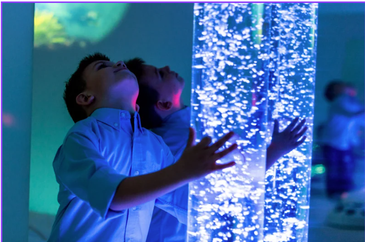
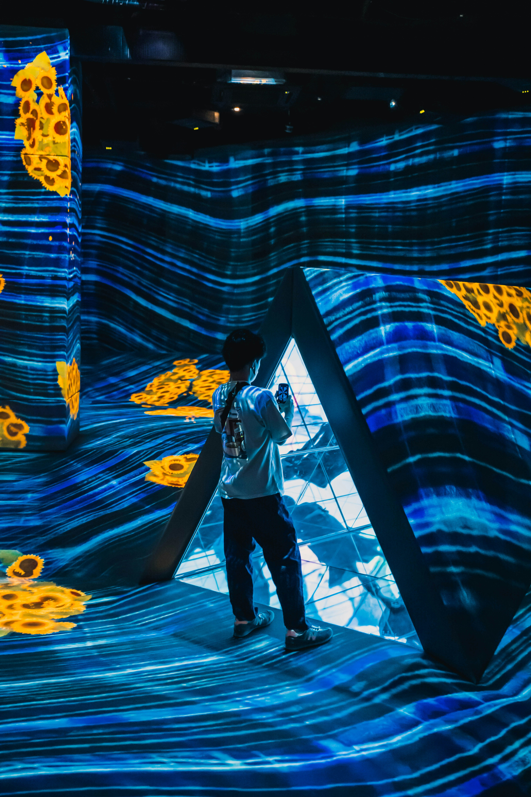

Discovery Through Play
Discovery Through Play is a welcoming and inclusive exhibition designed to support different learning styles, abilities and ways of exploring the world.
Through hands-on activities, sensory experiences and creative challenges, children can learn at their own pace in a safe and engaging environment.
The exhibition is especially suitable for:
- Children aged 7 - 15
- Families
- School groups
- Special education schools
- Visitors with additional support needs
What Can You Experience?
Discover science through hands-on activities, experiments and play.
Discovery Through Play offers a range of interactive activities that encourage learning through creativity, movement and exploration.
Creative Corner
Children can build, design and create using a variety of materials and hands-on activities that inspire imagination and problem-solving.
Mini Science Lab
Explore simple experiments and discover scientific concepts through fun and engaging activities designed for young learners.
Building Zone
Design towers, bridges and structures while developing teamwork, engineering and critical thinking skills.
Sensory Discovery
Explore textures, colours, light and sound through carefully designed sensory experiences that support different learning styles.
Imagination Station
Take part in creative challenges that encourage curiosity, innovation and discovery through play.
Our goal is to create a learning environment where every visitor feels included, supported and inspired


Ready to Explore?
Book your visit and discover a welcoming environment where learning, creativity and curiosity come together.
Book Your Visit